くっきり見える
デバイスごとに、ぴったりの大きさの画面をMacに用意。小さな画面でも、文字がつぶれません。
離れたMacを、スマホから。
AIもビルドも、家のMacに任せたまま。
進み具合を見て、次の指示は話すだけ。

声で書くAqua Voiceに対応話すだけで文字が入るから、キーボードいらず。Aqua Voiceは別の会社のアプリです。14日間、すべての機能を無料で。買い切り・月額なし・アカウント登録なし。
iPhone · iPad · Android · Mac
Macの画面を、スマホ・タブレット・別のMacへ。
デバイスごとに、ぴったりの大きさの画面をMacに用意。小さな画面でも、文字がつぶれません。
タッチ、トラックパッド、Mac配列のキーボード。日本語の入力も、いつもの感覚で。
通信は暗号化して、Macとデバイスの間で直接。自宅のMacの画面は、ワンタップで隠せます。
書き出し、ビルド、AIに任せた長い作業。席を離れていても、進み具合を見て、次の指示を出せます。
カフェでも、移動中でも。自宅のMacを開いて、資料をさっと確認できます。
Mac miniやiMacの前に座らなくても大丈夫。iPadやスマホが、そのままMacの画面になります。
持ち歩くのは軽いMacBookだけ。パワーが要る作業は、家のMacに任せましょう。
特長
Mothershipは、離れた場所からMacを「見る」ためではなく、「使う」ために作りました。小さな画面で文字を読み、日本語を打ち、ファイルを動かす。その一つひとつを、Macに合わせて作り込んでいます。
いちばんの違い
27インチのモニターをそのままスマホに映すと、文字は小さすぎて読めません。Mothershipは、つないでいる間だけ、あなたのデバイスと同じ大きさ・同じ形の専用モニターをMacに追加します。画面いっぱいに、点と点がぴったり合った状態で映るので、小さな文字までくっきり読めます。
専用モニターは、接続を切ると自動で消えます。
そのまま映すと大きな画面が縮んで、文字が読めない
Mothershipならデバイスの形に合わせた画面で、文字が大きい
触った場所がそのままクリックになる「直接タッチ」。画面全体をトラックパッドとして使うモード。⌘や⌥がそろったMac配列のキーボード。使い方に合わせて選べます。
リモート操作でつまずきやすい日本語入力に、2つの方法を用意しました。Macの日本語入力でそのまま変換する方法と、スマホのキーボード（フリック入力など）で変換してから送る方法。ボタンひとつで切り替えられます。
デバイスとMacの間の壁を、できるだけなくしました。
外出先からつないでいる間、自宅のMacの画面は、そばにいる人から見える状態になります。Mothershipは、Macの画面を黒く隠したまま、あなたのデバイスにだけ画面を映せます。
自宅のWi-Fiでは、登録したMacを自動で見つけてつながります。外出先からは、Tailscale（個人なら無料で使えるVPNサービス）を通して接続。Wi-Fiからモバイル回線に切り替わっても、自動でつなぎ直します。
外出先から使うには、MacとデバイスにTailscaleのアプリを入れ、同じアカウントでログインしておく必要があります。
声で入力
小さな画面で長い文章を打つのは、たいへんです。Mothershipは、Macの音声入力アプリ「Aqua Voice」とつながります。手元のデバイスに話しかけると、その声がMacに届き、開いているアプリに文字が入ります。メールの返信も、メモも、AIへの指示も、声だけで。
操作されるMac
macOS 14以降
Appleシリコン搭載のMacで動作を確認
操作する側
Mothership
対応するOSは、公開時にご案内します
操作する側
Mothership
Android 13以降。折りたたみにも対応
操作する側
Mothership
macOS 15以降
操作できるのはMacだけです。WindowsやLinuxのパソコンは操作できません。
使い方
操作したいMacに入れると、メニューバーに小さなアイコンが出ます。案内にそって「画面収録」と「アクセシビリティ」を許可してください。
iPhone・iPad・AndroidにMothershipを入れ、Macに表示したQRコードを読み取ります。アカウントの登録は要りません。
同じWi-Fiにいれば、Macが自動で見つかります。あとはタップするだけで、Macの画面が手元に。

料金
アプリのダウンロードは無料です。はじめてMacにつないだ日から14日間、すべての機能を制限なしで使えます。気に入ったら、一度の購入でずっと。月額料金はありません。
買い切り
US$19.99
日本円の価格は、公開時にご案内します。
試用期間が終わると、購入するまでデバイスから接続できなくなります。
いいえ。操作できるのはMacだけです。操作する側は、iPhone・iPad・Android・Macに対応しています。
はい。MacとデバイスにTailscale（個人なら無料で使えるVPNサービス）を入れておくと、外出先からも接続できます。ルーターの設定を変える必要はありません。
かかりません。14日間の試用のあとは、一度の購入でずっと使えます。
いいえ。一度の購入で、お持ちのMacを何台でも使えます。
Mothershipのサーバーは通りません。自宅では家のネットワークの中で、外出先ではTailscaleの暗号化されたネットワークを通して、Macとデバイスが直接やり取りします。
Mothershipには、アカウントの登録がありません。Macに表示したQRコードを読み取るだけで使いはじめられます。外出先から使う場合だけ、Tailscaleのアカウントが必要です。
Macに、音声入力アプリ「Aqua Voice」（別の会社の製品です）と、無料の仮想オーディオ「BlackHole 2ch」を入れ、Aqua Voiceのマイクを「BlackHole 2ch」にしておきます。あとは、デバイスの🎤ボタンを押している間に話すだけです。
Mothershipは、声を保存しません。声はデバイスからMacへ直接送られ、Macの中でAqua Voiceに渡されます。Aqua Voiceでの声の扱いは、Aqua Voiceの説明をご確認ください。
スリープ中は接続できません。Mothership Hostの「待機中もMacをスリープさせない」をオンにしてください。ノート型のMacは、ふたを閉じるとスリープすることがあります。
Macにログインするまでは、Mothership Hostが動かないため接続できません。ログインしたあとは、自動で待ち受けをはじめます（「ログイン時に起動」をオンにした場合）。
1台のMacにつなげるのは、一度に1台です。別のデバイスからつなぐと、そちらに切り替わります。
書類やブラウザでの作業、プログラミング、デザインの確認など、文字や画面をしっかり見る作業に向いています。動きの激しいゲームには向きません。
画面の動きと回線の状態に合わせて、自動で調整します。画面が止まっている間は、ほとんど通信しません。
「画面収録」（Macの画面を映すため）と「アクセシビリティ」（キーボードやマウスの操作を伝えるため）の2つです。Mothership Hostのメニューから、設定の画面を開けます。
Mothership Hostのメニューにある「登録済みの端末」から、そのデバイスを削除してください。削除したデバイスからは接続できなくなります。
14日間、すべての機能を無料で。まずは、操作したいMacにMothership Hostを入れるところからはじめましょう。
1. 操作されるMacに
macOS 14以降
近日公開2. 手元のデバイスに
App Store
近日公開2. 手元のデバイスに
Google Play
近日公開2. 手元のデバイスに
macOS 15以降
近日公開最初に、操作されるMacへ「Mothership Host」を入れてください。そのあとで、手元のデバイスに「Mothership」を入れます。